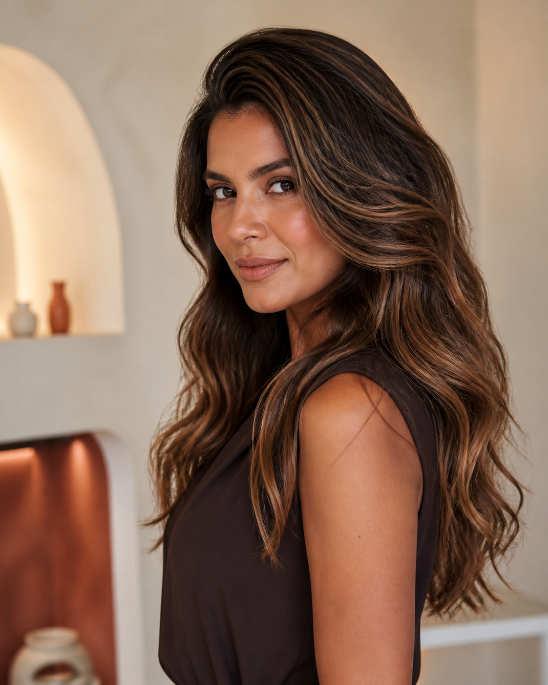
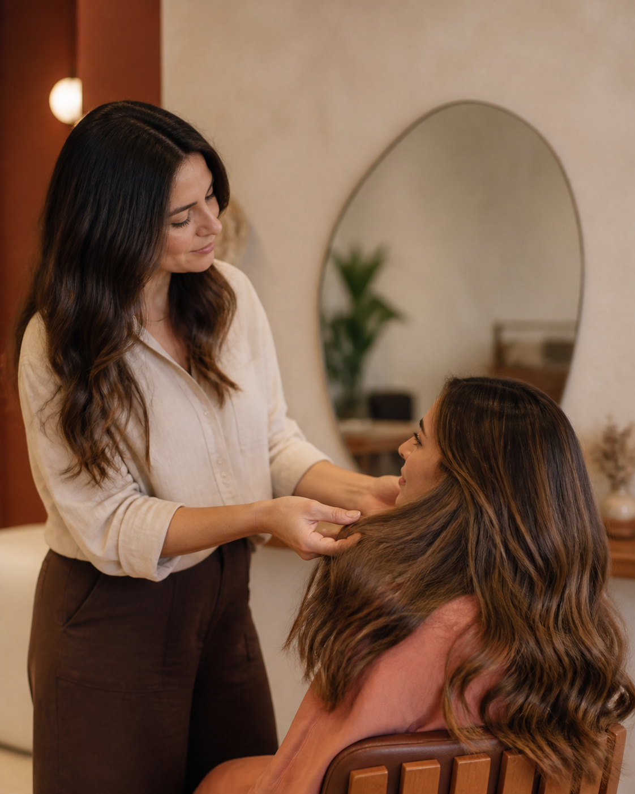
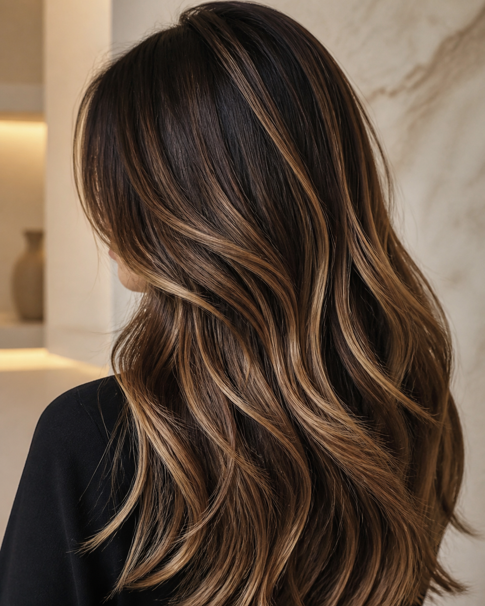
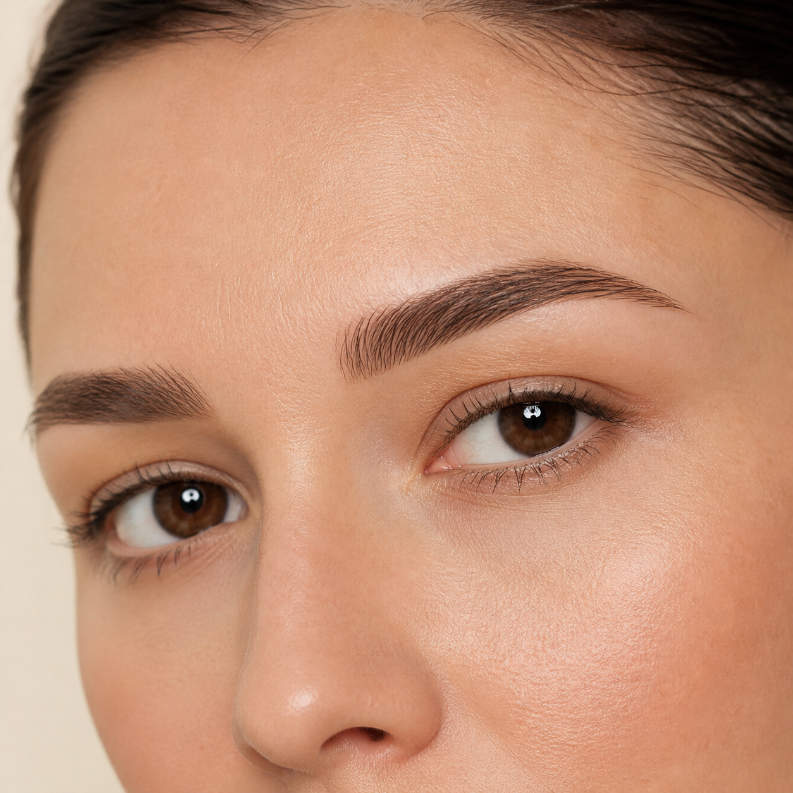
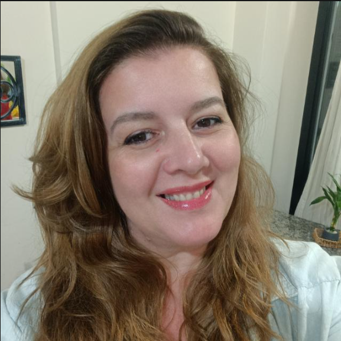

Mechas & iluminação
Cor, luz e dimensão planejadas para conversar com seu estilo, seus traços e sua rotina.
Cabelos e micropigmentação com técnica, escuta e um olhar atento para tudo o que faz você ser única.

cabelos · cor · identidade[ 01 — ESSÊNCIA ]

Cada mulher chega com uma história, uma expectativa e uma forma única de se enxergar. Por isso, o atendimento começa pela escuta. A partir dela, técnica e sensibilidade se encontram para construir um resultado que respeite você.
[ 02 — ESPECIALIDADES ]
Cor, luz e dimensão planejadas para conversar com seu estilo, seus traços e sua rotina.
Transformações conduzidas com atenção à harmonia do resultado e aos cuidados que seus fios precisam.
Desenho e preenchimento pensados para valorizar sua expressão com equilíbrio e naturalidade.
A micropigmentação reparadora também pode fazer parte de processos de reconstrução e retomada da autoestima. Com técnica, sensibilidade e profundo respeito por cada história, nós oferecemos um atendimento acolhedor para mulheres que desejam voltar a reconhecer no espelho uma parte importante de si.
Um olhar cuidadoso para recuperar forma, definição e confiança nas sobrancelhas.
[ RESULTADOS QUE INSPIRAM ]
Da luminosidade dos cabelos à delicadeza de uma sobrancelha bem desenhada, cada escolha deve conversar com você.

Mechas e colorações pensadas para valorizar o cabelo de maneira elegante e coerente com a sua rotina.
Conversar sobre cabelos ↗Um desenho delicado para devolver equilíbrio às sobrancelhas e realçar o olhar sem apagar sua identidade.
Conversar sobre sobrancelhas ↗

[ 03 — MELISSA ]
Melissa Pugsley atua nas áreas de cabelos e micropigmentação com uma proposta simples: unir conhecimento técnico a um atendimento próximo e respeitoso.
Cada escolha é feita em conjunto, considerando suas expectativas, características e o resultado que faz sentido para você.
“Antes de qualquer transformação, existe uma conversa.”
[ 04 — EXPERIÊNCIA ]
Você compartilha expectativas, referências e dúvidas.
O atendimento é definido conforme suas características e objetivo.
Técnica, atenção aos detalhes e presença durante todo o processo.
Recomendações para cuidar e aproveitar melhor o resultado.
[ 05 — ONDE ATENDO ]
Antônio Cândido Cavalim, 562 · Bairro Alto
Fermino Hermenegildo dos Santos, 364 · Fundos
Consulte pelo WhatsApp as próximas datas disponíveis para atendimento.
[ 06 — DÚVIDAS ]
Envie uma mensagem contando o que deseja mudar. A conversa inicial ajuda a entender suas expectativas e orientar o próximo passo.
Sim. Melissa atende em Curitiba e Florianópolis, sempre com hora marcada. Consulte a disponibilidade atual pelo WhatsApp.
Sim. Elas ajudam a comunicar suas expectativas e servem como ponto de partida para a avaliação.
Use qualquer botão de WhatsApp desta página para conversar diretamente e consultar datas.
Seu momento começa aqui
Conte qual serviço procura e em qual cidade deseja ser atendida.
Conversar com Melissa